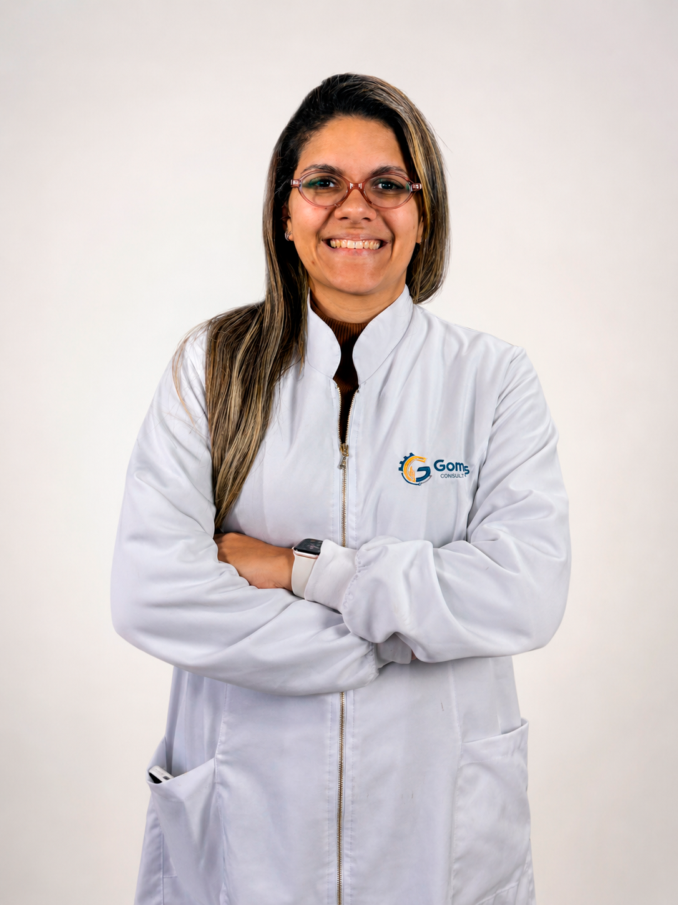
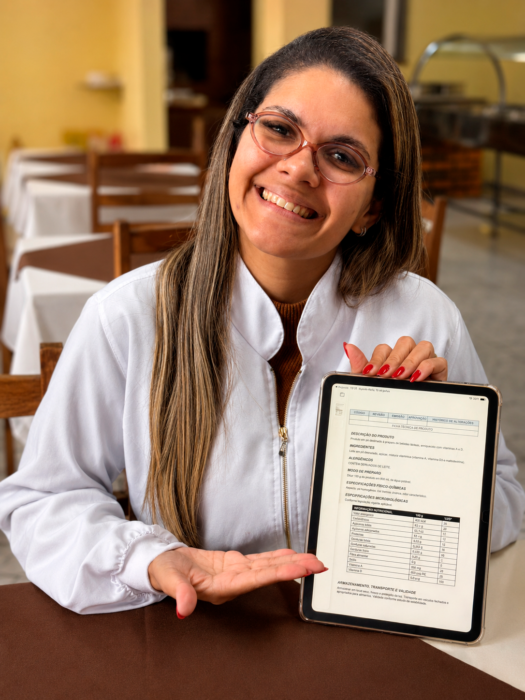

Mais segurança antes da fiscalização.
Engenheira de Alimentos · SC, PR e RS
RT, P&D, ISO e Regularização para a indústria de alimentos.
Assessoria técnica especializada para fábricas, supermercados e food service que precisam estar em conformidade e crescer com segurança.
Responsabilidade Técnica registrada
ISO 9001 e ISO 22000
ANVISA e MAPA
Atendimento presencial no Sul

Consultoria técnica
Regularização · Qualidade · Segurança
ANVISA
MAPA
ISO
9001 · 22000
Processos técnicos mais claros.
Produto pronto para vender com segurança.
Base técnica para novos mercados.
Segurança técnica
Assessoria técnica para decisões que exigem um engenheiro de alimentos.
Fábricas, supermercados e food service têm obrigações regulatórias específicas e contratar o profissional errado pode sair caro.
A Gomes Consultoria oferece a expertise técnica que sua operação precisa: da Responsabilidade Técnica à certificação ISO, da rotulagem ao desenvolvimento de novos produtos.
Falar com a GomesConformidade regulatória
Adequação às exigências da ANVISA, MAPA, vigilância sanitária e normas ISO antes da fiscalização chegar.
Orientação técnica clara
Diagnóstico da sua operação, identificação de riscos e plano de ação objetivo.
Presença em campo
Atendimento presencial em SC, PR e RS. A consultoria vai até você.
Áreas de atuação
Soluções técnicas para proteger e desenvolver sua operação
Consultoria em engenharia de alimentos para indústrias, supermercados e food service que precisam crescer com segurança regulatória.
Responsabilidade Técnica (RT)
Assinatura técnica registrada no CREA para sua fábrica ou estabelecimento. Obrigatória por lei para operar junto à ANVISA e ao MAPA e fundamental para evitar interdição.
P&D Pesquisa e Desenvolvimento
Do conceito ao produto pronto para vender. Formulação, padronização de receita, testes e ficha técnica completa. Para quem quer lançar, reformular ou ampliar portfólio.
Certificações ISO 9001 e ISO 22000
Implantação e suporte para certificação. Grandes redes e distribuidores exigem ISO como pré-requisito. É o que abre portas para contratos maiores.
Rotulagem e Ficha Técnica
Elaboração com software especializado, conforme as resoluções ANVISA vigentes. Rótulo irregular é produto fora do mercado.
05
Auditorias e Diagnósticos
Visita técnica presencial, relatório fotográfico e plano de ação. Identifique os riscos da sua operação antes que a fiscalização os encontre.
Adequações RDC 216 e RDC 275
Regularização de boas práticas para food service e fábricas. Procedimentos, documentação e treinamento de equipe.
Shelf Life
Determinação técnica do prazo de validade com metodologia segura e defensável perante ANVISA.
Registro ANVISA e MAPA
Suporte completo para registro e regularização de produtos e operações junto aos órgãos competentes.
Adequações para Exportação
Orientação técnica para empresas que desejam preparar produtos, processos e documentação para atender exigências de mercados internacionais, com mais segurança regulatória e padronização.
Quando buscar assessoria técnica
Quando contratar a Gomes Consultoria?
Alguns sinais mostram que sua operação precisa de acompanhamento técnico antes que o problema vire multa, interdição ou perda de oportunidade comercial.
01Sua fábrica ou estabelecimento não tem RT registrada.
02Vai abrir ou regularizar uma indústria de alimentos.
03Quer lançar um produto novo e não sabe por onde começar.
04Precisa de certificação ISO para fechar contratos maiores.
05Tem dúvidas sobre rotulagem ou ficha técnica do seu produto.
06Recebeu notificação ou visita da vigilância sanitária.
07Quer fazer uma auditoria preventiva antes da fiscalização.
08Precisa adequar seu food service à RDC 216.
09Precisa adequar sua indústria de alimentos à RDC 275.
10Quer preparar sua empresa para atender exigências de exportação.
11Quer garantir que sua operação está 100% regular.
Regularizar hoje
é proteger o crescimento da sua empresa amanhã.

SC · PR · RS
e empresas de todo o país
Sobre
Larissa Gomes
Larissa Gomes
Engenheira de Alimentos
A Gomes Consultoria atua no Sul do Brasil SC, PR e RS e também atende empresas de todo o país, oferecendo assessoria técnica especializada para operações do setor alimentício que precisam de conformidade regulatória, segurança de alimentos, desenvolvimento de produtos e preparação para novos mercados, incluindo exportação.
A atuação é pautada em presença em campo, rigor técnico e orientação clara para que cada cliente entenda os riscos, as obrigações e os caminhos da sua operação.
A Gomes Consultoria é qualificada pela PECS Brasil e tem atuação conectada às principais exigências do setor de alimentos.
Palestrante nas principais feiras do setor: FISPAL Tecnologia, ExpoAPRAS e FISA (Paris).
Falar pelo WhatsApp
FAQ
Perguntas frequentes
Escolha uma dúvida para receber uma resposta direta sobre RT, regularização, ISO e segurança de alimentos.
Contato
Fale com a Gomes Consultoria
Se você precisa de assessoria em engenharia de alimentos em SC, PR ou RS sobre RT, certificação, regularização ou desenvolvimento de produto entre em contato e explique sua situação.
Falar pelo WhatsApp